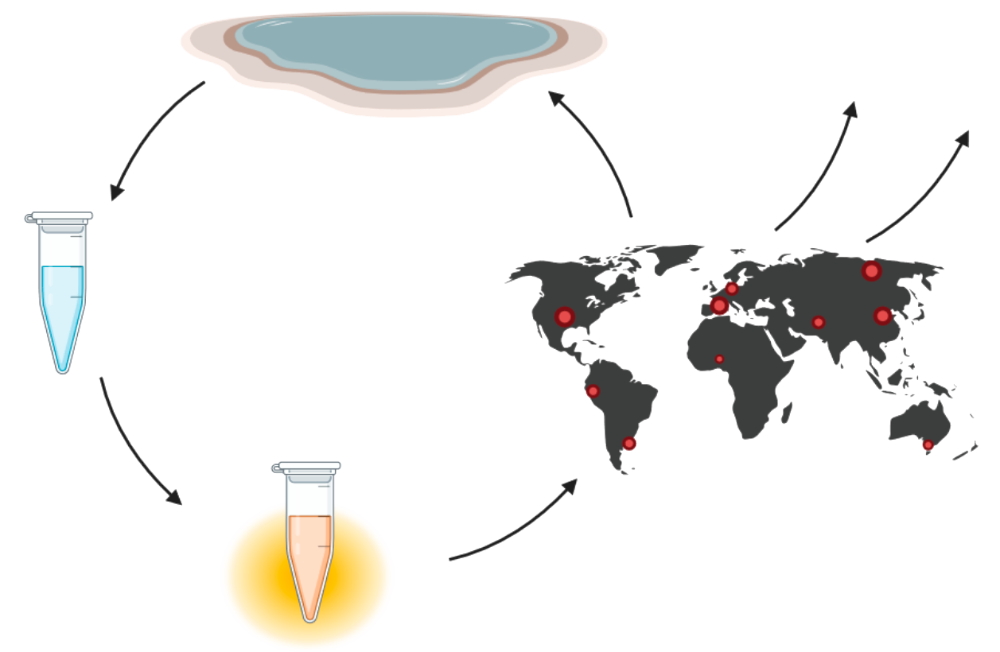

Project description
Today in Denmark, the question is not where PFAS is, but where PFAS isn't. Recent advances in environmental and health sciences have confirmed that PFAS, a class of "forever chemicals", are extremely detrimental to planetary and human well-being. As efforts are made to identify sites of contamination and sources of pollution, detection methods are not streamlined or efficient. A major obstacle in effectively controlling PFAS lies in sampling bias, where the need for specialized equipment, limited resources, and trained personnel hinders the acquisition of accurate, high-resolution, real-time information on global PFAS concentrations.
That is what we wish to target with our project, FluoroLoop, by designing and validating a cutting edge molecular diagnostic device that will make quick, easy, and cheap detection of PFAS a reality. Our overarching goal is to establish a comprehensive system for PFAS detection, followed by centralized data collection, as illustrated in Figure 1. Through this initiative, we aspire to significantly enhance our understanding of PFAS contamination and contribute to the well-being of both the planet and human health.
Persistent pollution and the problems of PFAS
Since the 1940s, per- and polyfluorinated alkyl substances (PFAS) have been produced for a myriad of purposes across the world. As fully (per-) or highly (poly-) fluorinated compounds, PFAS show exceptionally high stability due to the carbon-fluorine bonds and often have an amphiphilic nature conferred by a functional group. Their range of applications span from everyday products like water-proof clothing, cosmetics, and Teflon pans to industrial uses such as pesticides and firefighting foam (Brunn et al. 2023).
However, the features that make PFAS extraordinary also make them extraordinarily problematic. For the majority of PFAS, incineration temperatures must exceed 1100°C to achieve full mineralization of the strong carbon-fluorine bond. Similarly, some microorganisms can degrade the non-fluorine parts of polyfluorinated compounds, but none are able to cleave the fluorine bonds. This means that PFAS are rarely broken down fully, neither in industrial waste nor in nature, leading to long-term environmental pollution. In addition to their persistence, many PFAS molecules are associated with bioaccumulation and various severely harmful biological effects. The list of consequences in humans includes among many other things immunotoxicity, decreased fertility, and increased risk of multiple types of cancer. Despite this, we continue producing and using PFAS products and globally, it is estimated that we produce 320,000 tons of fluoropolymers annually (Brunn et al. 2023).
In the summer of 2021, PFAS became a hot topic in Danish news as the limit value for a subset of PFAS in drinking water was lowered. It became clear that many of our water reservoirs contain shockingly high levels of PFAS, far beyond what is considered safe for consumption. With more than 70% of measured water sources already containing PFAS, there is an increased threat to our future supply of clean drinking water (DR 14/03/2023). Following this, a media storm ensued, reporting PFAS pollution in free-roaming cattle, organic eggs, popular swimming areas, everywhere. The ubiquitous nature of these pollutants has not only sparked fear in the population, but also caused Denmark to advocate a PFAS ban throughout the EU. However, as part of the fight against PFAS pollution, it is crucial to identify high risk areas and gain an increased resolution of the problem.
Current detection methods & challenges
The current method of choice for PFAS detection and identification consists of sample enrichment followed by analysis using liquid chromatography and mass spectrometry (LCMS). While the method provides a sensitive limit of detection at 1 ng/L for many PFAS, it requires extensive training to perform, and a single sample typically cost hundreds of dollars to analyze (Cordner et al. 2021). Additionally, samples must be brought to a laboratory for analysis, resulting in a slow process.
What we need instead is a cheap, quick, and easy-to-use detection method.
Our solution: a modular, cell-free PFOA biosensor
To address this problem, we decided on our project: FluoroLoop. Our goal is to integrate a tRNA-mimicking structure (TMS) with a PFOA-specific aptamer to create a novel, cell-free biosensor. The TMS construct is a trans-acting gene regulator, and we aim to validate it as a modular biobrick, which can be converted to detect various compounds, most importantly other environmental pollutants. Ideally, we want to incorporate the PFAS biosensor in a cell-free system, which can be used as a low-cost rapid test kit for a citizen-driven effort to pinpoint PFAS pollution around the world. In parallel to our wet lab efforts, we plan to construct a bioinformatics tool to streamline and optimize in silico aptamer design.
The biology behind: tRNA-mimicking structures and aptamers
We will begin the project by validating the TMS and corresponding protocol from Paul et al. (2020) with multiple ligands. Following this, we will integrate the PFOA-specific aptamers developed by Park et al. (2022) into the D-loop module of the TMS in various configurations to investigate which constructs perform best in our system.
The benefit of a TMS-based molecular device compared to many others, e.g., riboswitches, is that the TMS system is trans-encoded. This is beneficial as it allows for modular design and does not require upstream modifications of the mRNA in question. The TMS is based on bacterial tRNA, which has been modified to bind both flanking sites of the ribosome binding site with a repressor domain to achieve tight control of gene expression. An anti-repressor is then used to break the repression by binding to a matching site in the D-loop, giving a dose-dependent output in relation to the anti-repressor concentration. By switching the D-loop to a complementary sequence or aptamer, the TMS can be customized to respond to a range of ligands, including proteins and small molecules (Paul et al. 2020). Reconstruction of such a system will result in a valuable and easily adaptable BioBrick that can be used to detect any molecule for which an aptamer exists. In our case, the main goal is to validate the system and insert a PFOA-sensing aptamer, as illustrated in Figure X.

Aptamers, such as the one mentioned above, are single-stranded DNA or RNA molecules, capable of selectively binding proteins, peptides, carbohydrates, small molecules, toxins, or even live cells. Since accumulation of PFAS in the environment is recent anthropogenic problem, the evolution of natural detection of these fluorinated compounds is highly limited. However, through the process of systematic evolution of ligands by exponential enrichment (SELEX), a library of aptamers can be tested for their affinity to specific molecules (Park et al. 2022). In Park et al. (2022), SELEX has been applied to discover aptamers specific for PFOA, using ssDNA.
Bioinformatics for better aptamer selection
In addition to in vitro validation, our plan also involves the development of a bioinformatics tool. The purpose of the tool is to streamline the design and optimization of aptamers by consolidating various molecular modeling tools used for aptamer dynamics into a single pipeline. By providing a comprehensive understanding of aptamer-analyte dynamics prior to laboratory experimentation, we anticipate that this tool will enhance the attractiveness of our molecular device.
Usually, aptamers are obtained through the challenging and time-consuming process SELEX, as mentioned earlier. Unfortunately, SELEX is experimentally challenging, time consuming, and does not guarantee the discovery of the best-performing aptamer (Flamme et al. 2019, Zhu et al. 2019). To address this limitation, researchers have been exploring predictive tools that take a rational approach to identifying the most effective aptamer sequence for a given ligand (Emami et al. 2020).
Notably, the Heidelberg iGEM team developed a tool called Making Aptamers Without SELEX (MAWS) in 2015, which was subsequently improved in 2017 (iGEM Heidelberg 2015, iGEM Heidelberg 2017). MAWS utilizes an entropic criterion for progressive selection of bases to predict aptamers in silico.
However, there is still limited understanding of the conformational changes that occur in aptamers upon ligand binding. This knowledge is crucial for a comprehensive characterization of intracellular aptamer behavior and the refinement of models. Additionally, there is a lack of integrated pipelines that encompass all the steps involved in modeling aptamer structure prediction, docking, and molecular dynamics. To address these challenges, our objective is to construct a holistic aptamer design pipeline utilizing workflow managers such as Docker or Snakemake.
Designing a cell free system for the PFOA quick test
In the end, our vision is to integrate the PFAS biosensor in a cell-free system for future distribution based on Guzman-Chavez et al. (2022). Cell-free technology utilizes in vitro transcription-translation systems in conjunction with cell extracts to provide ribosomes and transcription factors. Additionally, various other components are necessary for protein production. Although this technology has been financially out of reach for many applications, recent advancements offer promising prospects for significant cost reduction. These advancements encompass the utilization of more affordable energy sources, optimizing production with low-cost energy inputs, and simplifying the reaction mixture (Guzman-Chavez et al. 2022). Given our aim of providing an affordable PFAS rapid test, it is imperative to integrate it into a cost-effective cell-free system.
Citizen science and environmental protection
With the goal of developing a cell-free detection system for PFAS quantification, we aim to engage citizens across Denmark, and hopefully globally, in the process of pinpointing PFAS pollution. By creating an affordable, fast, and user-friendly device, we aim to empower citizens to gain comprehensive insights into the environmental conditions of their surroundings. This will enable individuals to actively monitor their own exposure levels and enhance the general understanding of the extent of PFAS pollution.
Additionally, through citizen science reporting, we hope to gather data on PFAS concentrations worldwide, creating a global heat map that identifies PFAS hotspots. Participants will receive test kits to examine their local areas. They can then upload their results to our website, where the data will be collected and presented on a user-friendly global map interface. This collective effort will raise public awareness about PFAS contamination while providing researchers with more detailed information on the distribution and movement of PFAS. Such knowledge can support the development of effective containment and control measures.